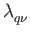

When you perform a calculation of electron-phonon interaction coefficients
with the tetrahedron method,
you have to use an offset q
There is an example in

occupation = "tetraehdra_opt" and K_POINT automatic.
lshift_q = .true. and electron_phonon = "" (or unset it)
to generate the dynamical matrix and
the deformation potential (in _ph*/{prefix}_q*/) of each q
electron_phonon = "lambda_tetra".
You should use a denser k
nk1, nk2, and nk3.
Then lambda*.dat are generated; they contain

alpha2f.x with an input file as follows:
&input
ne = (a),
ltetra = (b),
fildyn = (b),
mustar = (d),
prefix = (e),
/
Then
F()
PHonon/example/tetra_example/.


Next: 5 Parallelism
Up: 4 Using PHonon
Previous: 4.4 DFPT with the
Contents
2017-03-03